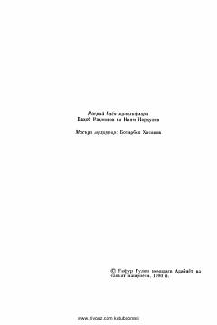

73Navoiyning 'Layli va Majnun' dostonining nasriy bayoni.
Bu kitob Alisher Navoiyning mashhur 'Xamsa' dostonlar to'plamidan 'Layli va Majnun' asarining nasriy bayonidir. Nasriy bayon muallif Vahob Rahmonov va Naim Norqulov tomonidan tayyorlangan. Asar 1990-yilda G'afur G'ulom nomidagi Adabiyot va san'at nashriyotida chop etilgan.